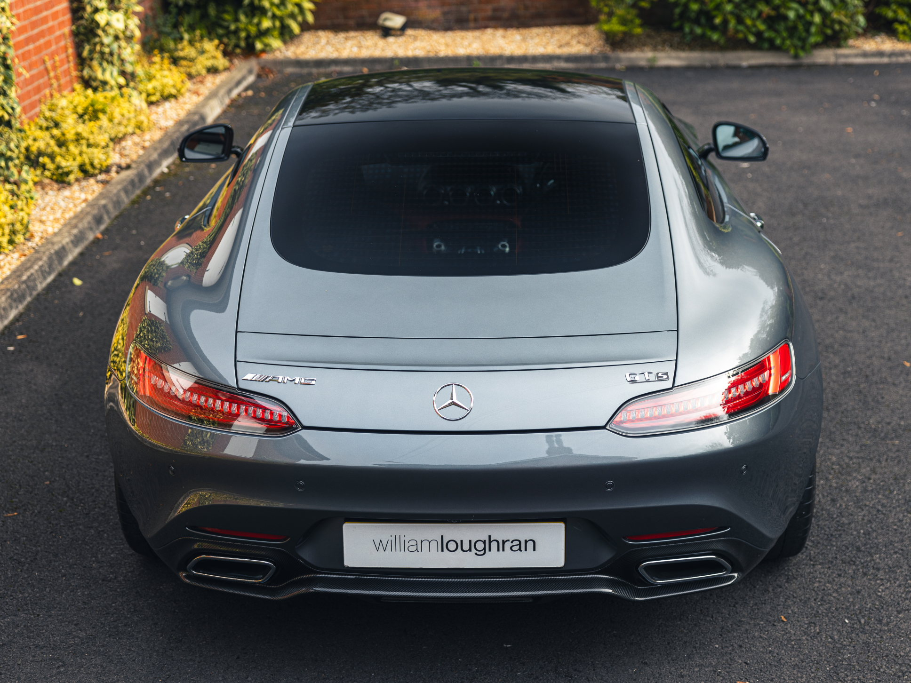
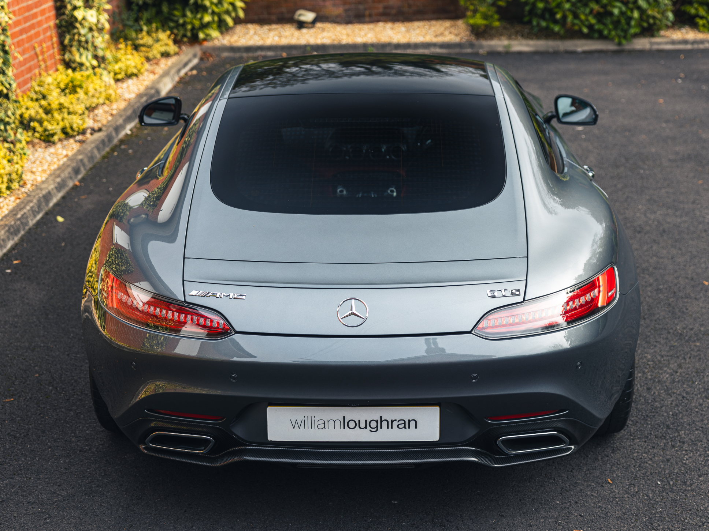

The Mercedes AMG GT followed on from the dramatic SLS and at launch was the among the most exciting and powerful Mercedes available – its two-door, two-seater layout, coupled with sharp, engaging handling and a thundering V8 engine, put it firmly in 911 territory. One look at the AMG GT is enough to get you excited about the driving experience. A hand built, 4.0-litre V8 with twin-turbochargers, a seven-speed dual-clutch gearbox, multi-link suspension and a low centre of gravity, it has all the best sports car ingredients. The engine is mounted behind the front axle for better weight distribution and a lower centre of gravity. As a result, the car feels sharp and very stable, with the body structure of a supercar, an engine from a muscle saloon, suspension tuned for maximum attack on the track and yet the practicality and sophistication of an elegant coupé.The example we have here is a one owner car from new with full Mercedes-Benz service history presented in selenite grey with two tone exclusive nappa leather in pepper red and black. The additional extras include the premium package, AMG exterior carbon package, AMG carbon fibre door sills, AMG performance steering wheel in nappa leather with dinamica inserts, AMG matt carbon fibre trim pack, AMG forged alloys in black, Burmester stereo system and a tracker.
 
